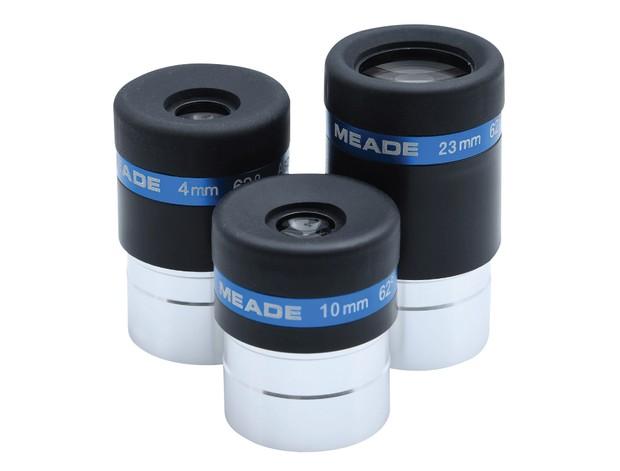
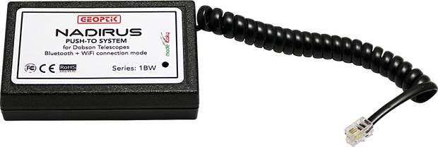
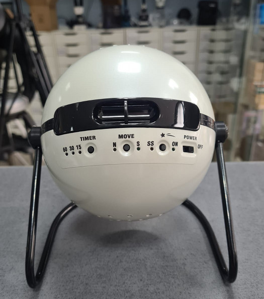

Useful AstroAccessories
Best astronomy accessories
This is a guide to the best astronomy accessories available in 2021.
Astronomy accessories can turn your telescope setup from a good, solid observing station to the next level in practical astronomy.
- Meade wide-angle eyepiece set
These affordable eyepieces are a great buy for any beginner. Their generous 62° field of view allows you to take a better look at large night-sky objects. The set comes with a padded storage box to protect them when not in use.
Figure 1. Meade wide angle eyepiece set  - Push-to passive tracking
This device attaches to your telescope, allowing you to keep track of its position with a planetarium app, helping you find your way around the night sky. Currently only compatible with SkySafari.
Figure 2. Push to passive tracking  - Sega Toys Homestar – Original Home Planetarium - white version
Picture the sky sparkling with stars just above your head as you sit on the sofa. The Sega Toys Homestar Original Planetarium makes this dream come true. High-resolution image is created thanks to the use of a powerful and very bright 3-watt LED in the projector. The projector canopy is rotatable, so it allows you to recreate the image of the sky across the night and year. The set includes two removable solid star disks of the northern hemisphere, allowing for viewing the stars or the constellation map, depending on the needs and wishes of the user.
Figure 3. Original Home Planetarium 